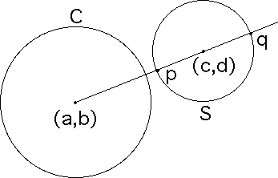
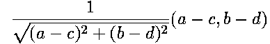
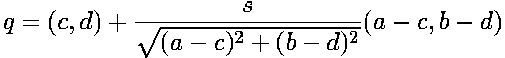
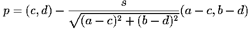
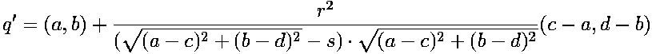
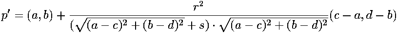
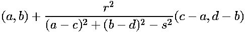
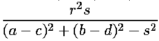
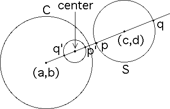
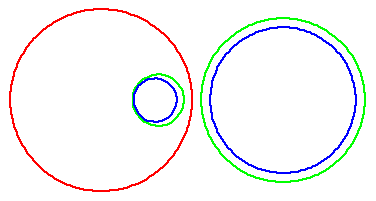

To invert the circle S with center
first
find the points p and q on S lying on the line determined by
|  |
The unit vector from
|  |
So to find the point q, start at the center
That is, start at
|  |
To find the point p, start at
|  |
Using the formula for the inverse of a point, we see that inverting p and q in C gives
|  |
and
|  |
Then, the center of the inverted circle is the midpoint of p' and q'. That is, the center is
|  |
The diameter of the inverted circle is the distance between p' and q', so the radius is
|  |
|  |
Note the center of the inverted circle is NOT the inverse of the center of S. Click the animation to stop.
|  |
Return to definition of inversion